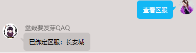
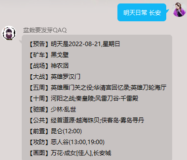

盆栽养护手册
常规查询
口令查询
v 说明：查询盆栽使用口令指南简化版
v 口令：盆栽
区服绑定(群主)
v 说明：给当前群组绑定指定区服，查询已绑区服可不带区服名
v 口令：绑定区服 区服
v 示例：绑定区服 长安城
当前区服
v 说明：查看当前群组已绑定区服
v 口令：查看区服

使用期限
v 说明：查看当前群组机器人服务到期时间
v 口令：查看授权
开服查询
v 说明：查询服务器开服状态
v 口令：开服 区服
v 示例：开服 长安城
公告查询
v 说明：查询最新一条公告
v 口令：公告 |资讯 |更新
日常查询
v 说明：查询每日大战、矿车、公共、周常等信息
v 口令：日常 区服 |明天日常 区服 |后天日常 区服 |日常推演
v 示例：日常 长安城


沙盘查询
v 说明：查询服务器沙盘状态
v 口令：沙盘 区服
v 示例：沙盘 长安城

配装查询
v 说明：查询当前赛季心法推荐配装
v 口令：配装 心法名 PVP/配装 心法名 PVE
v 示例：配装 惊羽诀 PVP

宏查询
v 说明：查询当前热门宏命令
v 口令：宏 心法名
v 示例：宏 惊羽诀

小药查询
v 说明：查询当前赛季门派小药
v 口令：小药 心法名
v 示例：小药 惊羽诀

阵眼查询
v 说明：查询心法阵眼属性
v 口令：阵眼 心法名
v 示例：阵眼 惊羽诀

特殊查询
奇遇前置
v 说明：查询触发奇遇的前置条件
v 口令：前置 奇遇名
v 示例：前置 三山四海

全服奇遇
v 说明：查询全区服指定奇遇触发情况
v 口令：全服奇遇 奇遇名
v 示例：全服奇遇 天涯无归

奇遇统计
v 说明：指定区服奇遇触发情况
v 口令：奇遇统计 区服 |奇遇统计 奇遇名 区服
v 示例：奇遇统计 天涯无归 长安

奇遇统计
v 说明：指定区服掉落情况
v 口令：掉落统计 区服 |掉落统计 物品名 区服
v 示例：掉落统计 天乙玄晶 长安

个人战绩
v 说明：查询当前区服指定玩家竞技比赛记录
v 口令：战绩 22/33/55 ID区服 |战绩 22/33/55 ID
v 示例：战绩 33 懒小五 华乾

个人属性
v 说明：查询当前区服指定玩家当前装备属性情况
v 口令：属性 ID 区服 |属性 ID
v 示例：属性 懒小五 华乾

奇遇攻略
v 说明：查询触发奇遇后的完成攻略
v 口令：攻略 奇遇名
v 示例：攻略 清茗经

个人奇遇
v 说明：统计当前区服指定玩家个人奇遇触发情况
v 口令：奇遇 ID 区服 |奇遇 ID
v 示例：奇遇 懒小舞 华乾

花价查询
v 说明：查询服务器花价线路
v 口令：花价 区服 |花价 花名 区服
v 示例：花价 葫芦 长安城
蹲宠查询
v 说明：查询当前区服蹲宠CD情况
v 口令：蹲宠 区服
v 示例：蹲宠 双梦
物价查询
v 说明：查询物品价格（匹配率不稳定)
v 口令：物价 物品名
v 示例：物价 狐金
金价查询
v 说明：查询各平台金价
v 口令：金价 区服 |金价 |全服金价
v 示例：金价 长安

器物查询
v 说明：查询器物谱所在地图产出家具
v 口令：器物 地图名
v 示例：器物 洛阳
家具查询
v 说明：查询器物谱所在地图产出家具
v 口令：器物 地图名
v 示例：器物 洛阳
名剑排行
v 说明：查询全区服名剑排行榜
v 口令：名剑排行 22/33/55
v 示例：名剑排行 33

名剑排行
v 说明：查询指定区服名剑排行榜
v 口令：名剑统计 22/33/55
v 示例：名剑统计 33

娱乐功能
签到算卦(待恢复)
v 说明：签到并给出今日卦象
v 示例：签到

盆栽日记
v 说明：随机日记
v 示例：日记/盆栽日记
骚话
v 说明：随机骚话
v 示例：骚话
情话
v 说明：随机表白
v 示例：表白
吃什么
v 说明：随机美食推荐
v 示例：吃什么
喝什么
v 说明：随机饮品推荐
v 示例：喝什么
河灯(面向所有盆栽用户)
v 说明：
n 放河灯：输入内容放出河灯
n 捡河灯：打捞已放出河灯(所有盆栽用户放出的河灯)
n 查看河灯：查看自己放出河灯被打捞情况
n 取消河灯：将自己已放出河灯收回
v 示例：
roll点(群主、管理员)
v 说明：由群主或管理员发起roll点，成员限定时间内参与
v 示例：开启roll点
语音合成
v 说明：合成语音消息
v 示例：语音 内容
水墨头像
v 说明：生成奇遇水墨圈头像
v 示例：水墨圈圈 内容+图片 |水墨圈圈 内容
缘分测试
v 说明：测试缘分
v 示例：缘分 姓名 姓名